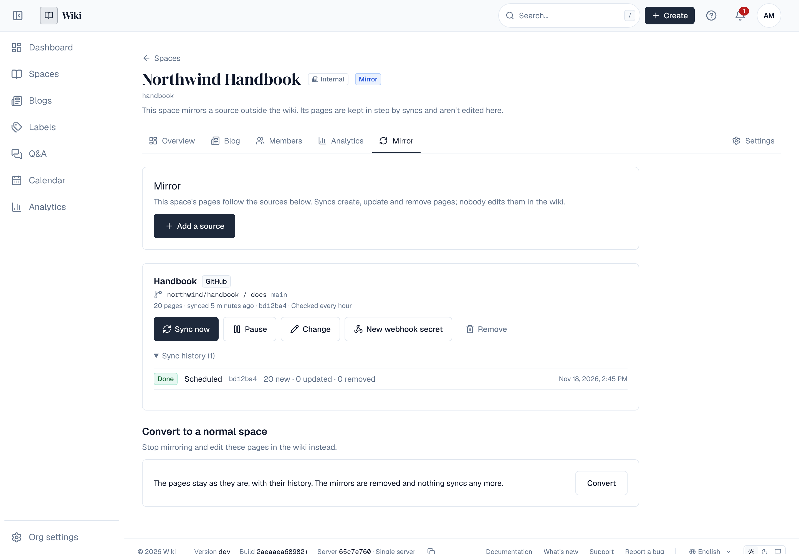
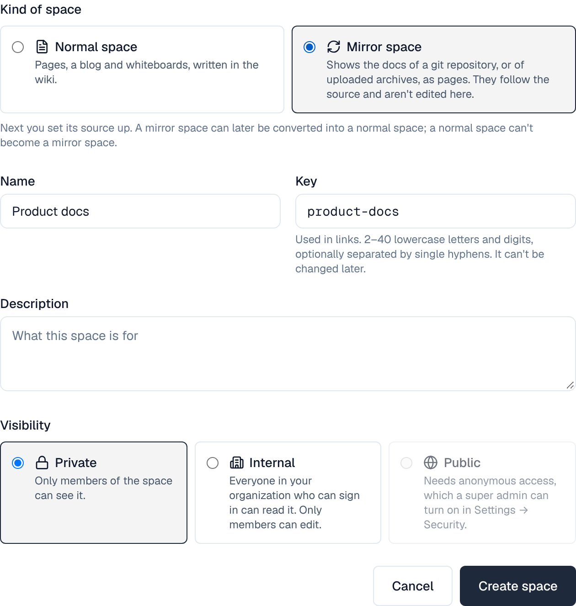
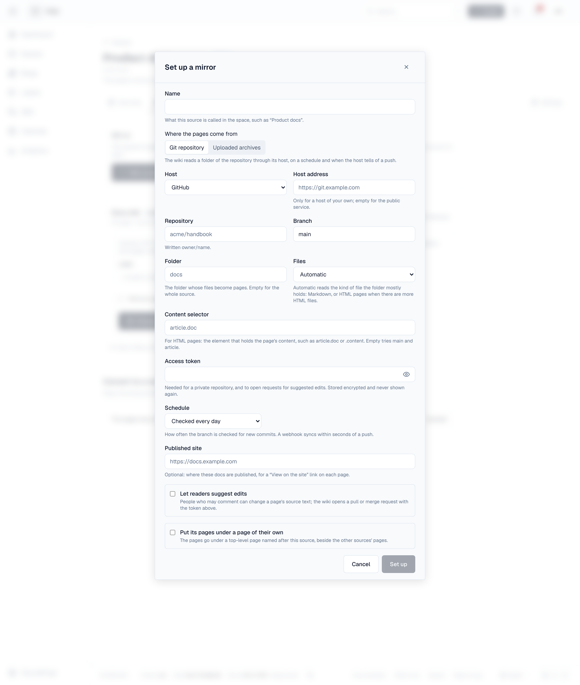
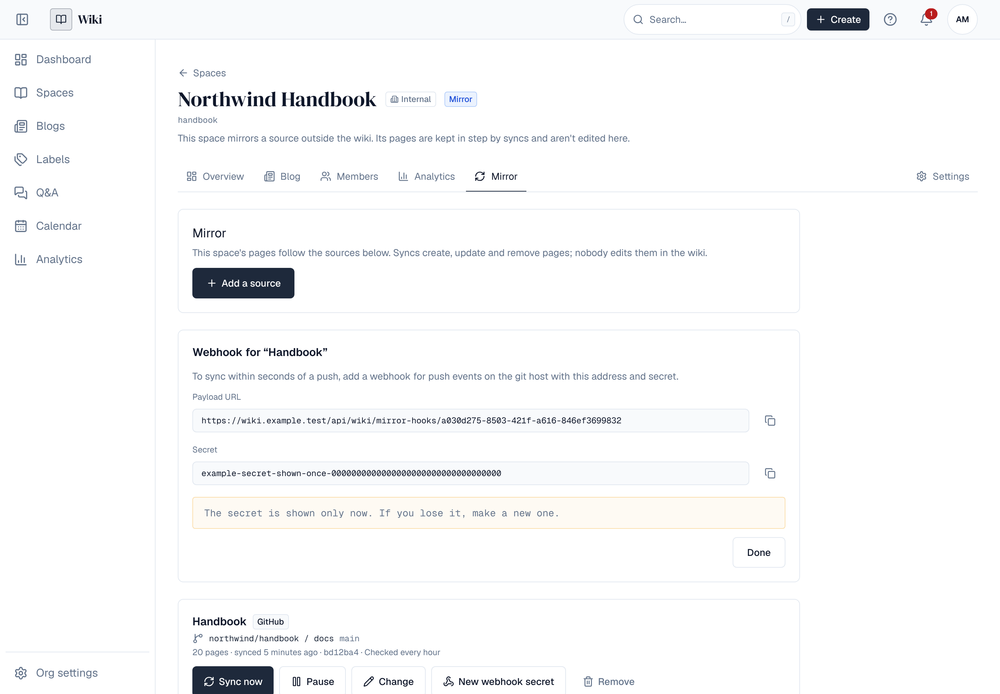
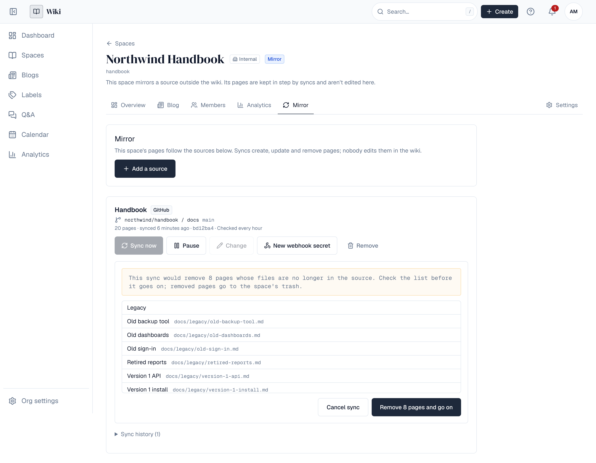
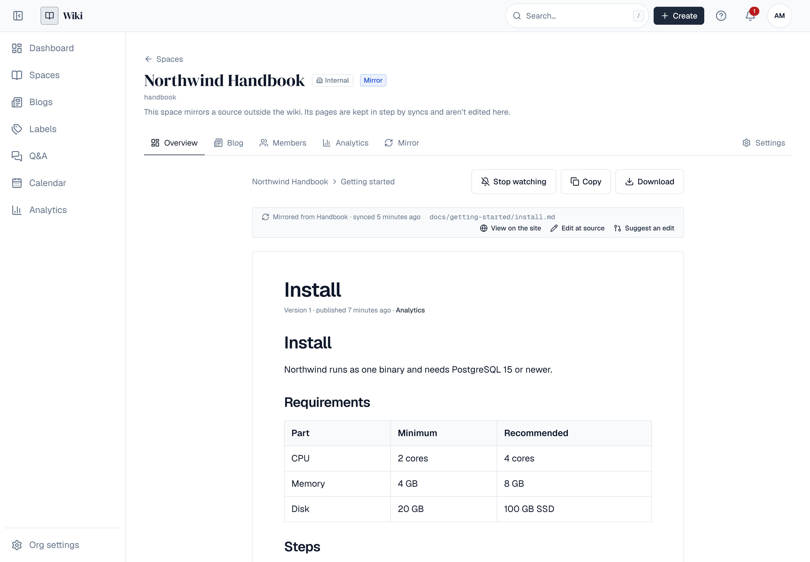
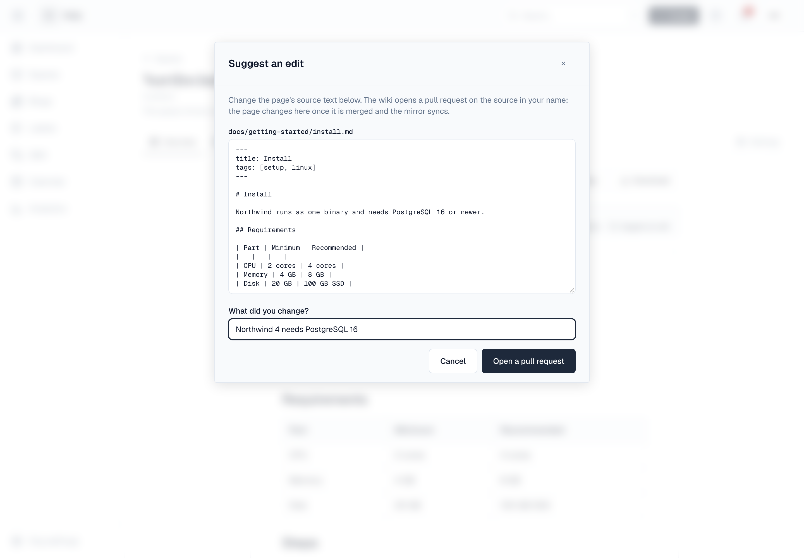
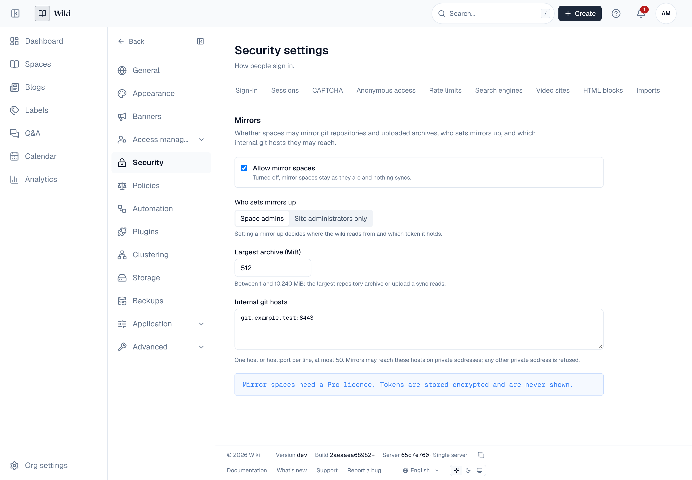

1. Overview
A mirror space shows documentation that lives somewhere else as pages of a wiki space: the Markdown or HTML files of a git repository, or archives a person or a build pipeline uploads. The pages follow the source. Each sync creates the pages of new files, updates the pages of changed files and moves the pages of removed files to the trash. Nobody edits a mirror space's pages in the Wiki; they are changed at the source.
Everything around the pages works as in any space: search, comments, reactions, labels, watching, analytics and exports.

Mirror spaces need a Pro licence (Licensing) and can be turned off by an administrator. A mirror reads the files of a repository, not a published site: it never crawls GitHub Pages or GitLab Pages, it reads the repository those sites are built from.
2. Creating a mirror space
A space is a mirror space from the moment it is created. Choose New space, then Mirror space under Kind of space, and fill in the name, key and visibility as for any space. The choice is offered to people who may set mirrors up; a normal space can't become a mirror space later.

A mirror space has only what a mirror needs: Overview (its pages), Mirror (its sources), Members and Settings. It has no blog, trash, import or templates, since nothing is written in it. A normal space has no Mirror tab.
3. Setting a mirror up
A new mirror space opens on its Mirror tab. A space admin chooses Add a source and fills in where the pages come from.

| Field | What it means |
|---|---|
| Name | What the source is called in the space, such as "Product docs" |
| Where the pages come from | Git repository (read through its host) or Uploaded archives (a ZIP a person or a pipeline uploads) |
| Host | GitHub, GitLab, Gitea or Forgejo, or Bitbucket Cloud. Host address is for a host of your own (GitHub Enterprise, self-managed GitLab, Gitea, Forgejo) |
| Repository, Branch, Folder | owner/name, the branch to follow, and the folder whose files become pages (empty for the whole repository) |
| Files | Automatic reads the kind of file the folder mostly holds: Markdown, or HTML pages when it holds more HTML files than Markdown files (a generated site's repository usually keeps a README or two beside its pages); or choose one. For HTML pages, Content selector names the element that holds a page's content (article.doc, .content); empty tries main and article |
| Access token | Needed for a private repository and for suggested edits. Stored encrypted and never shown again. Give it read access to the repository; for suggested edits, also the right to push branches and open pull or merge requests |
| Schedule | How often the branch is checked for new commits: every hour, every 6 hours, every day, or only when asked |
| Published site | Optional: where the docs are published, for a View on the site link on each page |
| Let readers suggest edits | See Suggesting an edit. Markdown files on GitHub and GitLab |
| Put its pages under a page of their own | The source's pages go under one top-level page named after it. Useful when a space follows several sources |
A space can follow up to 20 sources: choose Add a source for the next one.
- Open the mirror space's Mirror tab.
- Choose Add a source.
- Fill in Name and Where the pages come from, then the host, Repository, Branch and Folder (or pick Uploaded archives).
- Add an Access token for a private repository or suggested edits, and pick the Schedule.
- Choose Set up. Copy the webhook's Payload URL and Secret now if you want syncs on every push: they are shown once.
- Choose Sync now for the first sync, or wait for the schedule.
4. What becomes a page
- Each folder becomes a page holding its files' pages; a folder's index.md, README.md or _index.md is the folder page's text. Titles come from front matter (title), else the first heading, else the file's name. tags become labels, and images in the source become attachments.
- The order and titles of a MkDocs nav (mkdocs.yml) and of Docusaurus _category_.json files are followed when pages are first made.
- Notes and warnings written as !!! note (MkDocs), :::tip (Docusaurus) or > [!NOTE] (GitHub) become panels.
- HTML pages: the content element is converted to Wiki blocks; scripts, styles and the site's own navigation are left out.
- Links between files become links between pages.
5. Syncs
A git mirror syncs on its schedule, when someone chooses Sync now, and within seconds of a push when a webhook is set up. A sync only does work when the branch has a new commit. The Mirror tab shows the sync under way and the history: when, what started it, the commit, and how many pages were created, updated and removed. Pause stops a source's syncs until Resume.
6. Webhooks
When a mirror is set up, the Wiki shows a Payload URL and a Secret once. Add a webhook for push events on the git host with both (content type JSON). The Wiki checks every call's signature with the secret, and a push to another branch does nothing. If the secret is lost, New webhook secret makes another; the old one stops working at once.

7. Uploading archives
A source set to Uploaded archives takes a ZIP of the docs. Each upload makes the source's pages match the archive. Upload in the Mirror tab (large files are sent in parts and resume after a dropped connection), or from a pipeline with an API token of a space admin:
curl -X PUT \
-H "Authorization: Bearer $WIKI_TOKEN" \
-H "Content-Type: application/zip" \
--data-binary @site.zip \
"https://wiki.example.com/api/spaces/docs/mirrors/<mirror id>/archive?label=build-42"label is shown in the sync history. One request takes archives up to 32 MiB; larger ones go through the upload in parts, as the browser does. The mirror's id is in the API's list of the space's mirrors (GET /api/spaces/{key}/mirrors).
8. When a sync would remove many pages
A sync that would remove more than 5 pages and more than a fifth of the source's pages stops and waits: usually a folder was renamed, or the wrong branch or archive was sent. The Mirror tab lists the pages, and a space admin chooses Remove … pages and go on or Cancel sync. Removed pages go to the space's trash and can be restored from there until the trash is emptied. A pipeline that means it can add allowRemovals=true to its upload.

9. Reading a mirrored page
A strip above each mirrored page says which source it comes from, when it was last synced and which file it is, with links to Edit at source on the git host and, when the mirror has a published site, View on the site.

10. Suggesting an edit
Where a mirror lets readers suggest edits, people who may comment in the space see Suggest an edit on the strip. It opens the page's source text; change it, say what you changed, and the Wiki opens a pull request (GitHub) or merge request (GitLab) on the source that names you. The page changes in the Wiki once the request is merged and the mirror syncs.

- The request is opened with the mirror's access token, so people don't need an account on the git host.
- If the file changed on the source while you were editing, the Wiki says so; start again from the new text.
- Each person can open 20 suggestions a day.
11. Converting to a normal space
Convert on the Mirror tab stops mirroring: the space's mirrors are removed, nothing syncs any more, and its pages, with their history, comments and attachments, can be edited in the Wiki like any others. A converted space can't become a mirror space again.
Removing a single source leaves its pages as they are; the space stays a mirror space until it is converted.
12. For administrators
Settings → Security → Mirrors (settings:write):

| Setting | Default | Effect |
|---|---|---|
| Allow mirror spaces | On | Turned off, mirror spaces stay as they are and nothing syncs. Sources can still be removed and spaces converted |
| Who sets mirrors up | Space admins | Or site administrators only: setting a mirror up decides where the Wiki reads from and which token it holds. It also decides who may create a mirror space. Space admins then see their mirror space's sources without changing them |
| Largest archive (MiB) | 512 | Between 1 and 10,240: the largest repository archive or upload a sync reads |
| Internal git hosts | None | Hosts on private addresses that mirrors may reach, one per line (at most 50). Any other private address is refused |
- Syncs run in the background on any server, one step at a time; a sync that fails 5 steps in a row stops with its reason in the history.
- A mirror's syncs write pages as the person who set it up. If that person can no longer sign in, syncs stop until a space admin chooses Take over on the mirror.
- Setting up, changing and removing mirrors, syncs, suggestions and converting are in the audit log and raise events: mirror.create, mirror.update, mirror.delete, mirror.convert (a policy can refuse them, for example to allow only some hosts or repositories), mirror.synced, mirror.failed, mirror.suggestion.create and mirror_settings.update.
- Without a Pro licence nothing syncs; existing mirror spaces stay readable, and can be converted.
13. What isn't there yet
- Git hosts other than GitHub, GitLab, Gitea, Forgejo and Bitbucket Cloud: upload archives from a pipeline instead.
- A file renamed in the source becomes a new page; the old page, with its comments, goes to the trash.
- Pages that already exist aren't moved or re-ordered by later syncs.
- View on the site guesses a Markdown file's address; sites with unusual permalinks may not match.
- Suggested edits change the source text of one Markdown file; there is no rich editor for them.